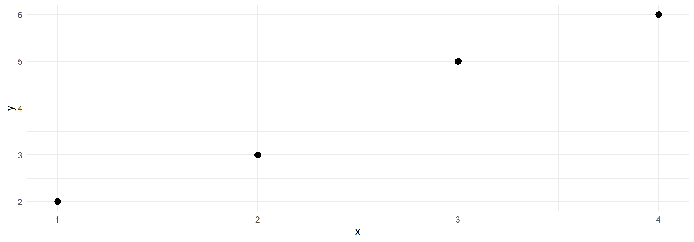

# A tibble: 4 × 2
x y
<int> <dbl>
1 1 2
2 2 3
3 3 5
4 4 6ST303 - Linear Models
By the end of this lecture, you should be able to:
Roadmap
| Part | Question |
|---|---|
| 1 | How do we write the model with matrices? |
| 2 | What does “best fit” mean? |
| 3 | How do we find it? (the normal equations) |
| 4 | How certain are we? (variances and intervals) |
Four observations, one predictor. Small enough to do everything by hand.
# A tibble: 4 × 2
x y
<int> <dbl>
1 1 2
2 2 3
3 3 5
4 4 6
We will keep coming back to this example all lecture.
The model says (Y_i=_0+_1X_i+_i). For our four points:
\[ \begin{aligned} 2 &= \beta_0 + \beta_1(1) + \varepsilon_1\\ 3 &= \beta_0 + \beta_1(2) + \varepsilon_2\\ 5 &= \beta_0 + \beta_1(3) + \varepsilon_3\\ 6 &= \beta_0 + \beta_1(4) + \varepsilon_4 \end{aligned} \]
Notice:
Four equations, same unknowns. Can we stack them into one equation?
\[ \underbrace{\begin{bmatrix}2\\3\\5\\6\end{bmatrix}}_{\mathbf Y} = \underbrace{\begin{bmatrix}1&1\\1&2\\1&3\\1&4\end{bmatrix}}_{\mathbf X} \underbrace{\begin{bmatrix}\beta_0\\\beta_1\end{bmatrix}}_{\boldsymbol\beta} + \underbrace{\begin{bmatrix}\varepsilon_1\\\varepsilon_2\\\varepsilon_3\\\varepsilon_4\end{bmatrix}}_{\boldsymbol\varepsilon} \]
\[ \boxed{\mathbf Y=\mathbf X\boldsymbol\beta+\boldsymbol\varepsilon} \]
Matrix multiplication just does the “write out every equation” step for us.
Each row of (X) is one equation’s right-hand side.
\[ \mathbf X\boldsymbol\beta= \begin{bmatrix}1&1\\1&2\\1&3\\1&4\end{bmatrix} \begin{bmatrix}\beta_0\\\beta_1\end{bmatrix} = \begin{bmatrix} 1\cdot\beta_0+1\cdot\beta_1\\ 1\cdot\beta_0+2\cdot\beta_1\\ 1\cdot\beta_0+3\cdot\beta_1\\ 1\cdot\beta_0+4\cdot\beta_1 \end{bmatrix} \]
Row (i) is (_0+_1x_i): the model’s prediction for observation (i).
Rule: row of the left matrix () column of the right matrix, multiply pairs and add.
The same product can be seen as a recipe:
\[ \mathbf X\boldsymbol\beta= \beta_0\begin{bmatrix}1\\1\\1\\1\end{bmatrix} + \beta_1\begin{bmatrix}1\\2\\3\\4\end{bmatrix} \]
So fitting a regression means: find the best recipe for approximating (Y) using the columns of (X).
We will use this column view in Part 3.
Nothing else changes. Suppose we add a second predictor (X_2):
\[ Y_i=\beta_0+\beta_1X_{i1}+\beta_2X_{i2}+\varepsilon_i \]
\[ \mathbf X= \begin{bmatrix} 1&X_{11}&X_{12}\\ 1&X_{21}&X_{22}\\ \vdots&\vdots&\vdots\\ 1&X_{n1}&X_{n2} \end{bmatrix}, \qquad \boldsymbol\beta= \begin{bmatrix}\beta_0\\\beta_1\\\beta_2\end{bmatrix} \]
In general with (k) predictors: (X) is (np) where (p=k+1) (the (+1) is the intercept).
Model: (Y=X+), the same formula as before.
| Quantity | Dimension | Meaning |
|---|---|---|
| (Y) | (n) | one response per observation |
| (X) | (np) | one row per observation, one column per term |
| () | (p) | one weight per term |
| () | (n) | one error per observation |
((np)(p)=(n)): the inner numbers match and the outer numbers give the answer’s shape.
Habit: whenever you meet a new matrix formula, write the shape under every symbol. Most algebra mistakes get caught here.
Pick any candidate weights (b). Then
Try (b=(1,,1)^T) on our example:
\[ \mathbf X\mathbf b=\begin{bmatrix}2\\3\\4\\5\end{bmatrix},\qquad \mathbf e=\begin{bmatrix}2\\3\\5\\6\end{bmatrix}-\begin{bmatrix}2\\3\\4\\5\end{bmatrix} =\begin{bmatrix}0\\0\\1\\1\end{bmatrix} \]
How do we turn a vector of residuals into one number that says how bad the fit is?
Square each residual and add them up:
\[ S(\mathbf b)=\sum_{i=1}^n e_i^2=\mathbf e^\mathsf T\mathbf e=(\mathbf Y-\mathbf X\mathbf b)^\mathsf T(\mathbf Y-\mathbf X\mathbf b) \]
Why does (e^Te) work? Row vector times column vector: multiply matching entries and add. Multiplying (e) by itself gives (e_12+e_22++e_n^2).
\[ \mathbf e^\mathsf T\mathbf e= \begin{bmatrix}0&0&1&1\end{bmatrix} \begin{bmatrix}0\\0\\1\\1\end{bmatrix} =0+0+1+1=2 \]
| Candidate (b) | Fitted values | Residuals | (S(b)) |
|---|---|---|---|
| ((1, 1)) | 2, 3, 4, 5 | 0, 0, 1, 1 | 2 |
| ((0.5, 1.4)) | 1.9, 3.3, 4.7, 6.1 | 0.1, -0.3, 0.3, -0.1 | 0.2 |
The second line is much closer to the data.
OLS definition: () is the choice of (b) that makes (S(b)) as small as possible.
We just need a way to find it without trying every possibility. (Spoiler: ((0.5,,1.4)) is the answer for this data.)
Think of (Y) as a single point in (n)-dimensional space (here, 4D).
Analogy: (Y) is a bird, the column space is the floor, and () is the bird’s shadow when the sun is directly overhead.
The line from shadow to bird is the residual vector (e). It points straight up, perpendicular to the floor.
The closest point on a floor is where you drop a perpendicular. So:
\[ \mathbf e\ \perp\ \text{every column of }\mathbf X. \]
“Perpendicular” for vectors means “dot product is zero”. Stacking the dot product of (e) with each column of (X):
\[ \mathbf X^\mathsf T\mathbf e= \begin{bmatrix} (\text{column 1})\cdot\mathbf e\\ (\text{column 2})\cdot\mathbf e\\ \vdots \end{bmatrix} =\mathbf 0 \]
This one equation is all we need. Next slide: the normal equations fall straight out of it.
Let () be the weights with (X^Te=), and let (b) be any other weights. Then
\[ \mathbf Y-\mathbf X\mathbf b= \underbrace{(\mathbf Y-\mathbf X\widehat{\boldsymbol\beta})}_{\mathbf e}+ \underbrace{\mathbf X(\widehat{\boldsymbol\beta}-\mathbf b)}_{\text{lies in the column space}}. \]
These two pieces are perpendicular, so by Pythagoras
\[ S(\mathbf b)=\mathbf e^\mathsf T\mathbf e+\big\|\mathbf X(\widehat{\boldsymbol\beta}-\mathbf b)\big\|^2\ \ge\ \mathbf e^\mathsf T\mathbf e = S(\widehat{\boldsymbol\beta}). \]
Every other choice is the same or worse. So “perpendicular residuals” really does mean “smallest sum of squares”.
Start from perpendicularity and substitute (e=Y-X):
\[ \begin{aligned} \mathbf X^\mathsf T\mathbf e&=\mathbf 0\\ \mathbf X^\mathsf T(\mathbf Y-\mathbf X\widehat{\boldsymbol\beta})&=\mathbf 0\\ \mathbf X^\mathsf T\mathbf Y-\mathbf X^\mathsf T\mathbf X\widehat{\boldsymbol\beta}&=\mathbf 0 \end{aligned} \]
Rearranging gives the normal equations:
\[ \boxed{\mathbf X^\mathsf T\mathbf X\,\widehat{\boldsymbol\beta}=\mathbf X^\mathsf T\mathbf Y} \]
(“Normal” here means “perpendicular”, not “bell-curve”.)
If (X^TX) is invertible, multiply both sides by its inverse:
\[ \boxed{\widehat{\boldsymbol\beta}=(\mathbf X^\mathsf T\mathbf X)^{-1}\mathbf X^\mathsf T\mathbf Y} \]
Fit a line through the origin with one predictor: (Y_i=x_i+_i).
| One predictor | Matrix version | |
|---|---|---|
| Model | (y=x) | (Y=X) |
| Normal equation | ((x_i^2)=x_iy_i) | (X^TX,=X^TY) |
| Solution | (=) | (=(X^TX)^{-1}X^TY) |
Both are just tables of dot products between columns. Call the columns () and (x).
\[ \mathbf X^\mathsf T\mathbf X= \begin{bmatrix} \mathbf 1\cdot\mathbf 1&\mathbf 1\cdot\mathbf x\\ \mathbf x\cdot\mathbf 1&\mathbf x\cdot\mathbf x \end{bmatrix} =\begin{bmatrix}n&\sum x_i\\\sum x_i&\sum x_i^2\end{bmatrix} \qquad \mathbf X^\mathsf T\mathbf Y= \begin{bmatrix} \mathbf 1\cdot\mathbf Y\\\mathbf x\cdot\mathbf Y \end{bmatrix} =\begin{bmatrix}\sum y_i\\\sum x_iy_i\end{bmatrix} \]
For our data ((x=1,2,3,4) and (y=2,3,5,6)):
\[ \mathbf X^\mathsf T\mathbf X=\begin{bmatrix}4&10\\10&30\end{bmatrix},\qquad \mathbf X^\mathsf T\mathbf Y=\begin{bmatrix}16\\47\end{bmatrix} \]
((1+2+3+4=10), (1+4+9+16=30), (2+3+5+6=16), (2+6+15+24=47).)
In general: (X^TX) is (pp), (X^TY) is (p), whatever (n) is. The big data matrix is squashed into a small summary.
We need to solve
\[ \begin{bmatrix}4&10\\10&30\end{bmatrix}\widehat{\boldsymbol\beta}=\begin{bmatrix}16\\47\end{bmatrix}. \]
Inverse of a (2) matrix: swap the diagonal, negate the off-diagonal, divide by the determinant.
\[ \text{determinant}=4(30)-10(10)=20, \qquad (\mathbf X^\mathsf T\mathbf X)^{-1}=\frac1{20}\begin{bmatrix}30&-10\\-10&4\end{bmatrix} \]
\[ \widehat{\boldsymbol\beta}=\frac1{20}\begin{bmatrix}30&-10\\-10&4\end{bmatrix}\begin{bmatrix}16\\47\end{bmatrix} =\frac1{20}\begin{bmatrix}480-470\\-160+188\end{bmatrix} =\frac1{20}\begin{bmatrix}10\\28\end{bmatrix} =\boxed{\begin{bmatrix}0.5\\1.4\end{bmatrix}} \]
The fitted line is (y=0.5+1.4x), the line we compared earlier.
You already know (1=S{xy}/S_{xx}) and (_0=y-_1x).
With (x=2.5) and (y=4):
\[ S_{xx}=30-4(2.5)^2=5,\qquad S_{xy}=47-4(2.5)(4)=7 \]
\[ \hat\beta_1=\frac75=1.4,\qquad \hat\beta_0=4-1.4(2.5)=0.5\ \checkmark \]
Matrix notation is not a new method. It is the same least squares, written so that it works for any number of predictors.
Fitted values (=X) and residuals:
\[ \widehat{\mathbf Y}=\begin{bmatrix}1.9\\3.3\\4.7\\6.1\end{bmatrix},\qquad \mathbf e=\begin{bmatrix}0.1\\-0.3\\0.3\\-0.1\end{bmatrix} \]
\[ \mathbf X^\mathsf T\mathbf e= \begin{bmatrix} 0.1-0.3+0.3-0.1\\ 1(0.1)+2(-0.3)+3(0.3)+4(-0.1) \end{bmatrix} =\begin{bmatrix}0\\0\end{bmatrix}\ \checkmark \]
For students who like derivatives. First the one-variable case, minimising (S(b)=(y_i-bx_i)^2):
\[ \frac{dS}{db}=-2\sum x_i(y_i-bx_i)=0\ \Rightarrow\ b=\frac{\sum x_iy_i}{\sum x_i^2}. \]
Matrix version. Expand (S(b)=(Y-Xb)^T(Y-Xb)):
\[ S(\mathbf b)=\mathbf Y^\mathsf T\mathbf Y-2\mathbf b^\mathsf T\mathbf X^\mathsf T\mathbf Y+\mathbf b^\mathsf T\mathbf X^\mathsf T\mathbf X\mathbf b. \]
(The two middle terms are the same number, since a (1) matrix equals its own transpose.)
Differentiate, using the rules ((b^Ta)/b=a) and ((b^TAb)/b=2Ab) for symmetric (A):
\[ \frac{\partial S}{\partial\mathbf b}=-2\mathbf X^\mathsf T\mathbf Y+2\mathbf X^\mathsf T\mathbf X\mathbf b=\mathbf 0 \ \Rightarrow\ \mathbf X^\mathsf T\mathbf X\widehat{\boldsymbol\beta}=\mathbf X^\mathsf T\mathbf Y. \]
Same normal equations. The second rule is the matrix version of “derivative of (ab^2) is (2ab)”.
The inverse exists only if the columns of (X) are linearly independent (full column rank, ((X)=p)).
Intuition: if one ingredient is a mix of the others, there are many recipes that give the same result, so the weights are not uniquely determined.
Typical causes:
The fitted values are still unique. Only the individual coefficients are not.
Near-dependence (strong collinearity) does not break the formula, but it makes the estimates unstable and their standard errors large.
Assume (E()=) and (()=^2I) (errors uncorrelated, constant variance).
\[ \operatorname{SSE}=\mathbf e^\mathsf T\mathbf e,\qquad \boxed{\widehat\sigma^2=\frac{\operatorname{SSE}}{n-p}} \]
Why (n-p) and not (n)? The residuals are forced to satisfy (p) constraints ((X^Te=)), so only (n-p) of them are free to vary.
Our example: (=0.12+0.32+0.32+0.12=0.2), (n-p=4-2=2), so
\[ \widehat\sigma^2=\frac{0.2}{2}=0.1,\qquad\widehat\sigma\approx0.316. \]
\[ \boxed{\operatorname{Var}(\widehat{\boldsymbol\beta}\mid\mathbf X)=\sigma^2(\mathbf X^\mathsf T\mathbf X)^{-1}} \]
One-variable analogy: ((Y)=^2/n). Here ((X^TX)^{-1}) plays the role of (1/n). More data, or more spread-out predictors, make (X^TX) bigger and the variance smaller.
For our example, plug in (^2=0.1):
\[ \widehat{\operatorname{Var}}(\widehat{\boldsymbol\beta})=0.1\cdot\frac1{20}\begin{bmatrix}30&-10\\-10&4\end{bmatrix} =\begin{bmatrix}0.15&-0.05\\-0.05&0.02\end{bmatrix} \]
Check: ((1)=^2/S{xx}=0.1/5=0.02 )
| Result | Needs |
|---|---|
| (=(X^TX)^{-1}X^TY) | only that (X) has full column rank (it is just geometry) |
| (E()=) | (E(X)=) |
| (()=^2(X^TX)^{-1}) | also ((X)=^2I) |
| Exact (t)-based confidence and prediction intervals | also normally distributed errors |
For a new predictor setting (x_0) (same terms, same order as the columns of (X), including the leading 1):
\[ \boxed{\widehat y_0=\mathbf x_0^\mathsf T\widehat{\boldsymbol\beta}} \]
For polynomial or interaction models, (x_0) must include the squared terms or products too.
Our example at (x=2.5): (x_0^T=(1, 2.5)), so
\[ \widehat y_0=1(0.5)+2.5(1.4)=4.0. \]
| Target | Standard error | |
|---|---|---|
| Confidence interval | the mean response at (x_0) | () |
| Prediction interval | a single new observation at (x_0) | () |
Both intervals have the form ( y_0t_{n-p,,1-/2}SE).
The extra 1 is the new observation’s own noise. That is why the prediction interval is always wider.
Example question: “What is the average exam score for students like this?” → confidence interval. “What score might one new student get?” → prediction interval.
):
\[ \mathbf x_0^\mathsf T(\mathbf X^\mathsf T\mathbf X)^{-1}\mathbf x_0 =\frac1{20}\begin{bmatrix}1&2.5\end{bmatrix}\begin{bmatrix}5\\0\end{bmatrix}=\frac{5}{20}=0.25 \]
(This equals (1/n) because (x_0=x). It is the smallest possible value, so intervals are narrowest at the mean of (x).)
With (t_{0.975,,2}=4.303):
\[ \begin{aligned} SE_{\text{fit}}&=\sqrt{0.1(0.25)}=0.158, &\text{CI}&=4.0\pm4.303(0.158)\approx(3.32,\ 4.68)\\ SE_{\text{pred}}&=\sqrt{0.1(1.25)}=0.354, &\text{PI}&=4.0\pm4.303(0.354)\approx(2.48,\ 5.52) \end{aligned} \]
(Intercept) x
0.5 1.4 (Intercept) x
(Intercept) 0.15 -0.05
x -0.05 0.02 fit lwr upr
1 4 3.319691 4.680309 fit lwr upr
1 4 2.478783 5.521217Everything we did by hand matches lm().
Two objects with unknown weights (_1,_2). Each measurement is (weight in pan 1) (-) (weight in pan 2) + error. Four measurements:
\[ \mathbf X= \begin{bmatrix} 1&0\\0&-1\\1&-1\\1&1 \end{bmatrix} \quad\text{(rows: obj 1 alone; obj 2 in pan 2; obj 1 vs obj 2; both in pan 1)} \]
\[ \mathbf X^\mathsf T\mathbf X=3\mathbf I_2,\qquad \widehat{\boldsymbol\beta}=\frac13\begin{bmatrix}Y_1+Y_3+Y_4\\-Y_2-Y_3+Y_4\end{bmatrix},\qquad \operatorname{Var}(\widehat{\boldsymbol\beta})=\frac{\sigma^2}{3}\mathbf I_2 \]
There is no intercept: the expected measurement is purely a mix of the two weights. The estimates are uncorrelated, since (X^TX) is diagonal.
Same number of measurements, same noise. Only (X) differs.
| Design | (X^TX) | ((_j)) |
|---|---|---|
| Original | (3I_2) | (^2/3) |
| A: ( | (4I_2) | (^2/4) |
| B: ( | (2I_2) | (^2/2) |
Take-away: you can improve precision just by choosing (X) well. The bigger (X^TX) is, the smaller the variance. This is the basis of experimental design.
(These are illustrative matrices. A real experiment must also respect how the measurement is physically made.)
Six observations, two predictors, one quadratic term:
\[ Y_i=\beta_0+\beta_1X_{i1}+\beta_2X_{i1}^2+\beta_3X_{i2}+\varepsilon_i \]
# A tibble: 6 × 3
y x1 x2
<dbl> <dbl> <dbl>
1 6.1 1 0
2 5.4 2 0
3 7.2 3 0
4 8.9 1 1
5 9.1 2 1
6 11.6 3 1We will compute everything from the matrix formulas, then verify with lm().
Columns must be in the order ((1, X_1, X_1^2, X_2)).
(Intercept) x1 I(x1^2) x2
1 1 1 1 0
2 1 2 4 0
3 1 3 9 0
4 1 1 1 1
5 1 2 4 1
6 1 3 9 1
attr(,"assign")
[1] 0 1 2 3(n=6) rows, (p=4) columns. Note: a quadratic model is still a linear model, since it is linear in the ()’s. A squared term is just another column.
[,1]
(Intercept) 8.333333
x1 -3.850000
I(x1^2) 1.200000
x2 3.633333solve(XtX, XtY) solves the normal equations directly. It is faster and more numerically stable than computing the inverse and then multiplying.
# A tibble: 6 × 3
observed fitted residual
<dbl> <dbl> <dbl>
1 6.1 5.68 0.417
2 5.4 5.43 -0.0333
3 7.2 7.58 -0.383
4 8.9 9.32 -0.417
5 9.1 9.07 0.0333
6 11.6 11.2 0.383 # A tibble: 1 × 6
n p residual_df SSE MSE residual_standard_error
<int> <int> <int> <dbl> <dbl> <dbl>
1 6 4 2 0.643 0.322 0.567# A tibble: 4 × 4
term estimate standard_error lm_standard_error
<chr> <dbl> <dbl> <dbl>
1 (Intercept) 8.33 1.76 1.76
2 x1 -3.85 1.99 1.99
3 I(x1^2) 1.20 0.491 0.491
4 x2 3.63 0.463 0.463The diagonal of (^2(X^TX)^{-1}) gives the squared standard errors.
The design row is ((1, 1, 1, 1)), because (X_1^2=1).
x0 <- model.matrix(~ x1 + I(x1^2) + x2, data = tibble(x1 = 1, x2 = 1))
y0_hat <- drop(x0 %*% beta_hat)
h0 <- drop(x0 %*% solve(XtX) %*% t(x0)) # x0'(X'X)^{-1} x0
t_crit <- qt(0.975, df = n - p)
SE_fit <- sqrt(MSE * h0)
SE_pred <- sqrt(MSE * (1 + h0))
rbind(
CI = y0_hat + c(-1, 1) * t_crit * SE_fit,
PI = y0_hat + c(-1, 1) * t_crit * SE_pred
) [,1] [,2]
CI 7.324188 11.30915
PI 6.166281 12.46705 fit lwr upr
1 9.316667 7.324188 11.30915 fit lwr upr
1 9.316667 6.166281 12.46705Only 2 residual degrees of freedom, so the intervals are very wide. This is a good demonstration of the formulas but not a basis for real conclusions.
| Idea | Matrix form | Plain-English meaning |
|---|---|---|
| Model | (Y=X+) | response = mix of columns + noise |
| Fitted values | (=X) | closest point to (Y) in the column space |
| Residuals | (e=Y-) | what is left over |
| Criterion | minimise (e^Te) | smallest sum of squares |
| Key fact | (X^Te=) | residuals perpendicular to every column |
| Normal equations | (X^TX=X^TY) | perpendicularity, rearranged |
| Estimator | (=(X^TX)^{-1}X^TY) | “divide” cross-products by sum of squares |
| Error variance | (^2=/(n-p)) | average squared residual, adjusted for (p) fitted parameters |
| Coefficient variance | (^2(X^TX)^{-1}) | the matrix version of (^2/n) |
A model has (n=50) observations, three predictors plus an intercept.
Discuss:
Answers